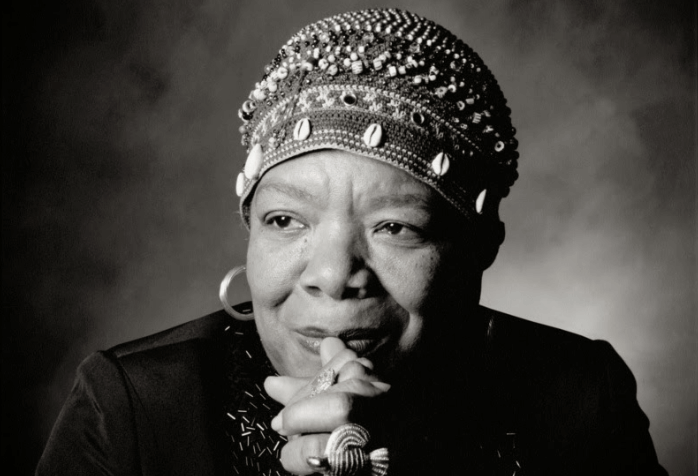

Rosa Park
Rosa Parks es conocida principalmente por su papel en el movimiento por los derechos civiles en Estados Unidos, específicamente por su negativa a ceder su asiento en un autobús a un hombre blanco en Montgomery, Alabama, en 1955.
Este acto de desobediencia civil desencadenó el boicot de autobuses de Montgomery, un movimiento que duró más de un año y que finalmente llevó a la desegregación de los autobuses en la ciudad.
Aunque Rosa Parks fue una figura clave en la lucha por la igualdad racial, no se le conoce por un activismo específico por los derechos de las mujeres. Su lucha se centró principalmente en la lucha contra la segregación y la discriminación racial.
Es importante destacar que la lucha por los derechos civiles y la lucha por los derechos de las mujeres, aunque a veces se perciben como movimientos separados, están profundamente interconectados. La experiencia de las mujeres negras en Estados Unidos, marcada por la discriminación racial y de género, las coloca en una posición única para comprender y luchar contra la opresión en todas sus formas.
Maya Angelou

Maya Angelou (1928-2014) fue una autora, poeta y activista estadounidense. Es más conocida por sus obras autobiográficas, especialmente la primera, "Sé por qué canta el pájaro enjaulado" (1969), que exploraba su infancia y adolescencia en el sur de Estados Unidos durante la era de Jim Crow. La escritura de Angelou a menudo trataba temas de racismo, sexismo y resistencia, y se convirtió en una poderosa voz para los derechos civiles y la justicia social.
Además de su trabajo literario, Angelou fue una ferviente defensora de los derechos de las mujeres. Sus escritos y discursos inspiraron a muchas mujeres a luchar por la igualdad y la autodeterminación. También fue una figura clave en el movimiento feminista de la década de 1960 y 1970, y su trabajo ayudó a dar forma a la conversación sobre el papel de las mujeres en la sociedad.
Recibió numerosos premios por su trabajo, incluida la Medalla Nacional de las Artes y la Medalla Presidencial de la Libertad.
Argentinas que ayudaron al voto femenino
El 11 de noviembre de 1951 las mujeres argentinas pudieron ejercer por primera vez a nivel nacional su derecho al voto y a ser elegidas representantes. Fue la victoria de una lucha que materializó el gobierno peronista con el protagonismo indiscutido de Eva Perón, pero que el movimiento de mujeres y, especialmente, sufragistas como Julieta Lanteri, Elvira Rawson, Cecilia Grierson y Alicia Moreau, habían iniciado luego de la sanción de la Ley Sáenz Peña (1912) que establecía el voto secreto y obligatorio sólo para los hombres mayores de 18 años.
Micaela Bastidas (1744-1781) y cómo influyó en la historia de la Independencia
Micaela fue fundamental para involucrar a cientos de mujeres indígenas en la lucha contra la opresión española. Fue consejera principal de Túpac Amaru, su esposo. Participó en el consejo de los cinco. Proveyó a las tropas, Micaela se encargó de conseguir armas, alimentos, dinero y vestimenta para las tropas rebeldes. Organizó la retaguardia indígena, que se encargaba de implementar medidas de seguridad y luchar contra el espionaje.
Micaela era una estratega que hacía tareas administrativas, políticas y militares, demostró su capacidad para movilizar y motivar a las comunidades indígenas.